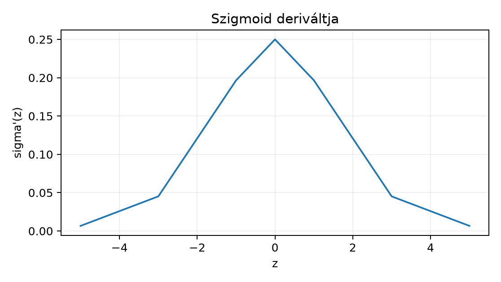

A 9.3. Expresszivitás és approximációs állítások egységben láttuk, hogy egy elég széles ReLU-háló képes tetszőleges folytonos függvényt közelíteni kompakt tartományon. Ez reprezentációs állítás volt: megmondja, hogy létezik jó súlykonfiguráció, de semmit sem ígér arról, hogy a gradiensalapú tanítás megtalálja. Ebben az egységben a másik irányt vizsgáljuk: mit mond egyetlen lokális derivált, és hogyan szorzódnak össze a lokális deriváltak mély hálóban.
Előismeret: a 9.3. Expresszivitás és approximációs állítások aktivációi, valamint a derivált és a láncszabály 4.1.–4.3. fogalmai; a tanulási célfüggvény és a gradienslépés visszahívása a 8.4. II. ellenőrző pont: korrekt tanulási állítás alfejezetből elegendő.
Induló kérdés. Egy 12 rétegű skaláris hálóban minden réteg szigmoidot használ, súlya . Körülbelül mekkora lehet a bemenetre vonatkozó gradiens abszolút értéke? A választ a helyi deriváltak felső korlátja adja, amelyet a 36.4 szakaszban pontosan levezetünk; jó becslés a .
Legyen egy aktiváció. Egy preaktivációs mátrixon az aktivációs réteg elemenként hat:
Ha differenciálható az pontban, akkor -re csak hat, ezért a parciális derivált
minden más parciális derivált nulla. A skaláris veszteségre visszavezetett lokális VJP tehát
ahol alakja megegyezik alakjával. Ez a fenti lokális VJP-képlet az egész fejezet központi szabálya; a teljes háló gradiense ilyen lokális szabályok kompozíciója lesz a 10.1. Számítási gráf és lokális derivált alfejezetben.
Három gyakori aktiváció és a definiált pontokon vett deriváltja:
| Aktiváció | Képlet | Lokális derivált, ahol létezik |
|---|---|---|
| szigmoid | ||
| tanh | ||
| ReLU | ha , ha |
A szigmoid deriváltja egyetlen lépésben ellenőrizhető:
ahol az utolsó egyenlőségnél .
Definíció. Azt mondjuk, hogy egy differenciálható aktiváció a pont közelében telítődik, ha nagyon kicsi. A szigmoid esetében ez minden -re korlátozott, sőt:
Állítás. Minden esetén , és mellett .
Bizonyítás. Legyen . Ekkor . A parabola maximuma , amelyet esetén vesz fel. A határérték esetén , tehát ; esetén analóg módon .
A tanh esetében , és esetén ugyancsak nullához tart. A ReLU ezzel szemben a pozitív oldalon konstans deriváltat ad, tehát a pozitív tartományban nem telítődik; a negatív oldalon a derivált nem kicsi, hanem pontosan nulla.
A telítődés önmagában még lokális jelenség. Ahhoz, hogy egy mély háló bemeneti gradiensére gyakorolt hatását lássuk, láncszabályra és a lokális deriváltak szorzatára van szükség.
Tekintsük a skaláris, bias nélküli, rétegű
rekurziót, ahol és differenciálható minden fellépő pontban.
Lemma (szorzatos gradiens). A fenti rekurzióra
$$ \frac{d f_L}{dx} = \prod_{\ell=1}^{L} \Bigl(w_\ell\,\phi'(a_\ell)\Bigr). $$
Bizonyítás. -re a láncszabály közvetlenül . Tegyük fel, hogy az állítás -re igaz. Ekkor
$$ \frac{d f_L}{dx} = \frac{d}{dh_{L-1}}\phi(w_L h_{L-1}) \cdot \frac{d h_{L-1}}{dx} = w_L\phi'(a_L) \cdot \prod_{\ell=1}^{L-1} \Bigl(w_\ell\phi'(a_\ell)\Bigr). $$
A szorzat tehát -re is teljesül; az indukció lezárja a bizonyítást.
A lemma közvetlen következménye az eltűnő gradiens egy egyszerű alakja. Ha minden -re , akkor
és exponenciálisan nullához tart. A szigmoidra a fenti deriváltképlet miatt , tehát esetén választható. Például esetén
Ez a felső korlát: a tényleges gradiens ennél csak kisebb lehet. A korlát nem bizonyítja, hogy a tanítás szükségképpen sikertelen, csupán azt mutatja, hogy a nyers SGD-lépés irányvektorának egyes komponensei tetszőlegesen kicsik lehetnek.
Érdemes megkülönböztetni a jelenség két okát. A szigmoidos példában a lokális derivált maximuma , tehát a szorzat akkor is lecseng, ha minden súly egységnyi. A tanh lánc az , választással ezzel szemben nem telített pontokon halad át, mert , és a gradiens mégis : itt a kis súlyok szorzata okozza a lecsengést. Az eltűnő gradiens tehát termékjelenség, nem feltétlenül telítődési jelenség.
A ReLU nullpontja külön kezelést igényel. A pontban a bal oldali derivált
míg a jobb oldali derivált
A két egyoldali derivált nem egyenlő, ezért a klasszikus értelemben vett nem létezik.
A konvex függvények elméletében a pontbeli szubdifferenciál azokból a értékekből áll, amelyekre minden -re
esetén ez
,
azaz
;
esetén
,
azaz
.
A szubdifferenciál tehát a
intervallum. A PyTorch relu backward szabálya a
pontban a
értéket választja. Ez a szubdifferenciál egy eleme, tehát
szubgradiens-konvenció, de nem klasszikus derivált. A
könyvtári választás más könyvtárban lehet
vagy
is.
Dead ReLU. Ha egy neuron preaktivációja minden tanítópéldára nempozitív, akkor kimenete mindig , lokális gradiensértéke a fenti konvenció szerint szintén , ezért a bemenő súlyokra és a biasra eső gradiens minden tanítópéldában nulla lesz. Az ilyen neuron „halott”: a tiszta, momentum nélküli adatgradiens-lépés alatt (más hozzájárulás nélkül) a bejövő paraméterei nem változnak; korábbi momentum, az előző rétegek változása, közös paraméter vagy weight decay mégis reaktiválhatja, így a hálózat reprezentációs kapacitásából ez a neuron kiesik. Ez heurisztikus megfigyelés, nem tétel: súlycsökkentéssel vagy az adateloszlás megváltozásával a neuron elvileg újra aktiválódhat, de a tiszta gradiensalapú tanításban erre nincs garancia.
Kis ellenőrző példa: a bemeneteken. A preaktiváció mindig , tehát és a lokális gradiens minden mintára . Ha a tanítóhalmaz csak ezt a három pontot tartalmazza, a bemenő súly és a bias gradiense a veszteség láncszabálya szerint nulla.
A labor célja: ábrázoljuk az aktivációkat és deriváltjaikat, majd mérjük meg kézi láncszabállyal ugyanannak a skaláris hálónak a bemeneti gradiensét és mélységben. A kód NumPy-t használ, CPU-n fut, és determinisztikus.
# lab/n036/activation_gradients.py
import numpy as np
import matplotlib
matplotlib.use("Agg")
import matplotlib.pyplot as plt
# A labor determinisztikus; a seed a későbbi véletlen kiegészítések felületét rögzíti.
rng = np.random.default_rng(20261020)
def sigmoid(z):
return np.float32(1.0) / (np.float32(1.0) + np.exp(-z))
def relu(z):
return np.maximum(np.float32(0.0), z)
def dsigmoid(z):
s = sigmoid(z)
return s * (np.float32(1.0) - s)
def dtanh(z):
t = np.tanh(z)
return np.float32(1.0) - t * t
def scalar_mlp(x, depth, w, phi, dphi):
"""Skaláris, bias nélküli MLP. Visszaadja a kimenetet és a dx gradienst."""
h = np.float32(x)
local_derivatives = []
for _ in range(depth):
a = np.float32(w) * h
local_derivatives.append(np.float32(w) * np.float32(dphi(a)))
h = phi(a)
grad = np.prod(local_derivatives, dtype=np.float32)
return np.float32(h), np.float32(grad)
def main():
x = np.float32(0.0) # tanh-nál nem telített pont
w = np.float32(0.8)
for depth in (4, 12):
y, g = scalar_mlp(x, depth, w, np.tanh, dtanh)
print(f"depth={depth:2d} output={y:.6f} input_grad={g:.6f}")
z = np.linspace(-5, 5, 501, dtype=np.float32)
plt.figure(figsize=(8, 4))
plt.plot(z, sigmoid(z), label="sigmoid")
plt.plot(z, dsigmoid(z), label="sigmoid derivált")
plt.plot(z, np.tanh(z), label="tanh")
plt.plot(z, dtanh(z), label="tanh derivált")
plt.plot(z, relu(z), label="ReLU")
plt.grid(True)
plt.legend()
plt.title("Aktivációk és lokális deriváltak")
plt.savefig("lab/n036/activations.png", dpi=150)
print("mentve: lab/n036/activations.png")
if __name__ == "__main__":
main()Futtatási parancs a könyv munkakönyvtárából:
python lab/n036/activation_gradients.pyVárható kimenet és értelmezés. Mivel esetén , minden réteg preaktivációja nulla, így minden ; a gradiens pontosan a súlyok szorzata. A kód által kiírt értékek így kézzel ismert kontrollt adnak:
depth= 4 output=0.000000 input_grad=0.409600
depth=12 output=0.000000 input_grad=0.068719A fenti két sor a képletből számított várható érték,
mert
és
;
ezt a kézirat írásakor nem futtattuk, ezért a későbbi futtatás során a
float32 kerekítés utolsó jegyeken eltérhet. Az értelmezés
nem az, hogy a hálózat „elromlott”, hanem az, hogy az inputgradiens egy
alakú felső korláttal csökken;
-nál
tizenkét réteg után a bemeneti réteg súlyfrissítése jóval kisebb
tényezővel skálázódik, mint négy rétegnél.
A szigmoidot és deriváltját egyszerű diagramon is érdemes látni:

A teljes activations.png ábrán a ReLU törése is látható:
a derivált
-ról
-re
ugrik a nullpontnál, ahol klasszikus derivált nincs.
A következő visszaterjesztési kód gyakori:
def relu_backward(a, grad_out):
return (a > 0).astype(np.float32) * grad_outA kommentben gyakran „ReLU-derivált” szerepel. Ez hibás elnevezés: a kód a pontban a PyTorch-hoz hasonlóan -t ad, miközben a ReLU-nak ott nincs deriváltja. A különbség mérhető: a középső differencia
minden -ra, tehát a véges differencia -öt ad a pontban, a fenti kód pedig -t. Ez nem a kód numerikus hibája, hanem annak következménye, hogy a véges differencia nemdifferenciálható pontban nem definiál semmit. A 10.3. Gradiensellenőrzés és numerikus hibamérce gradiensellenőrzési protokollja ezért a vizsgálati pontot a törésponttól távol veszi fel, vagy a vizsgált konvenciót előre rögzíti.
Ellenőrizze, hogy tudja-e: (1) igazolni a korlátot; (2) levezetni a képletet; (3) megmondani, miért nem létezik a klasszikus ReLU-derivált nullában, és mi a szubdifferenciál.
Visszahívás a 8.4. II. ellenőrző pont: korrekt tanulási állítás alfejezetből: a gradiens az empirikus kockázat plusz regularizáló cél szerinti frissítési irány része; a gradiens kicsinysége a nyers lépés skáláját csökkenti, de Adam-szerű normalizáló optimizálók ezt részben ellensúlyozhatják. Ugyanakkor az eltűnő gradiens itteni levezetése semmit nem mond az általánosításról, és a kis gradiensből nem következik, hogy a tesztkockázat kicsi vagy nagy lesz: ez pontosan a 8.4. II. ellenőrző pont: korrekt tanulási állítás tanítási állítások határa, amelyet itt nem lépünk át.
F1 (fogalmi, nehézség 1). Definiálja egy mondatban a telítődést és a dead ReLU jelenséget, majd adjon mindkettőre egy-egy konkrét egyváltozós számszerű esetet. Elvárt eredmény: két definíció, egy-egy kiszámolt lokális derivált vagy gradiensérték, és egy mondat arról, miben más a kettő.
F2 (levezetési, nehézség 2). Vezesse le a 36.4 szakasz rekurziójából a gradiens szorzatképletét -ra, bias nélkül, tetszőleges differenciálható -vel. Ezután számítsa ki , , , , esetén a pontos gradiensértéket. Elvárt eredmény: teljes láncszabály-lépések, a fellépő értékek és a numerikus eredmény a kerekítés indoklásával.
F3 (implementációs, nehézség 2). Készítsen egy
lab/n036/feladat_f3.py programot, amely egy háromrétegű,
tanh aktivációjú skaláris MLP gradiensét kézi szorzatképlettel és
középső differenciával is kiszámítja. Input:
;
a három súlyt np.random.default_rng(20261020) generálja
float64 pontossággal a
intervallumból; a differencialépés
.
Elvárt átadandó eredmény: a teljes program, a kiírt analitikus és
numerikus gradiens, valamint egy assert ellenőrzés, hogy az
abszolút eltérés
alatt van. Magyarázza meg a float64 választását.
F4 (hibakeresési, nehézség 2). Egy társa a következő kódot mutatja:
def relu_backward(a, grad_out):
# ReLU deriváltja
return (a > 0) * grad_outA függvényt az
,
grad_out=1.0 pontban teszteli, és arra panaszkodik, hogy a
középső differencia szerint
-nek
kellene lennie, a kód viszont
-t
ad. Lokalizálja a hibát, nevezze meg a tényleges okot, és adjon olyan
javítást, amely nem nevezi deriváltnak a
pontbeli visszaterjesztési értéket. Elvárt átadandó eredmény: ok,
következmény, javított függvény dokumentációval és két olyan tesztpont,
ahol a klasszikus derivált létezik, valamint a numerikus
visszaellenőrzés.
F5 (kísérleti/transzfer, nehézség 3). Tervezzen GlyphLab-protokollt annak eldöntésére, hogy azonos szélesség és mélység mellett a tanh vagy a ReLU MLP ér el kisebb validációs loss-t a három orientáció osztályozásában. A terv kövesse a 8.4. II. ellenőrző pont: korrekt tanulási állítás és 5.4. Függő képek, seedek és resampling tanulságait: a képeket lapítsa hosszú vektorrá, a scene_id csoportosítást ne sértse meg, a tesztet ne használja modellválasztásra, és legalább öt tanítási seeddel mérje a seedek közötti szórást. Adjon baseline-t, optimalizálót, epochszámot, batchméretet és kiértékelési metrikát, valamint két módszertani korlátot. Elvárt átadandó eredmény: egy bekezdésnyi protokoll-leírás a fenti elemekkel és a korlátokkal.
F1. A telítődés lokális tulajdonság: kicsi. Például , de , tehát a függvény az környezetében telített. A dead ReLU ezzel szemben adatfüggő, globálisabb jelenség: ha minden tanítópéldára , a neuron kimenete és lokális gradiense is nulla. Például a tanítóhalmazon mindig kimenetet ad, így a bemenő súly gradiense minden mintára . A különbség: a telített szigmoid deriváltja kicsi, de nem nulla, és más bemenetre azonnal „felébredhet”; a holt ReLU bejövő paraméterei a rögzített tanítóhalmazon nulla gradiensük miatt nem frissülnek.
F2. A láncszabályt hátulról felírva:
Az kezdőpont miatt minden preaktiváció nulla, hiszen a bias nincs jelen, és . Mivel , a szorzat
Az alakellenőrzés: minden tényező skalár, ezért az eredmény is skalár. A érték pontos, a véges tizedestörtként egzakt.
F3. Egy teljes megoldás:
# lab/n036/feladat_f3.py
import numpy as np
def tanh(x):
return np.tanh(x)
def dtanh(x):
return 1.0 - np.tanh(x) ** 2
def forward(x, ws):
acts = []
h = x
for w in ws:
a = np.float64(w) * np.float64(h)
acts.append(a)
h = tanh(a)
return np.float64(h), acts
def analytic_grad(ws, acts):
g = np.float64(1.0)
for w, a in reversed(list(zip(ws, acts))):
g = g * np.float64(w) * dtanh(a)
return g
rng = np.random.default_rng(20261020)
ws = [np.float64(rng.uniform(0.5, 1.5)) for _ in range(3)]
x0 = np.float64(1.0)
y, acts = forward(x0, ws)
g_an = analytic_grad(ws, acts)
h = np.float64(1e-6)
yp, _ = forward(np.float64(x0 + h), ws)
ym, _ = forward(np.float64(x0 - h), ws)
g_num = (yp - ym) / (np.float64(2.0) * h)
print("sulyok:", ws)
print("analitikus:", g_an)
print("numerikus: ", g_num)
print("abszolut elteres:", abs(g_an - g_num))
assert abs(g_an - g_num) < 1e-5A float64 azért szükséges, mert a középső differencia
két közeli kimenet kivonását végzi; float32-ben a
kivonásnál a kerekítési zaj nagyobb lehet, mint a
-es
módszerhiba. A tanh sima az
környezetében, ezért a klasszikus derivált létezik, és a véges
differencia jogos ellenőrzés. Alakellenőrzés: a gradiens skalár, mert a
bemenet, a súlyok és a kimenet is skalár.
F4. A hiba típusa: fogalmi tévedés, nem numerikus
implementációs hiba. A (a > 0) kifejezés a nullpontban
False, ezért
-t
ad, de a ReLU-nak a nullpontban nincs klasszikus deriváltja, így a
középső differencia
értéke sem „helyes derivált”. A konvenciót dokumentálni kell, a tesztet
pedig olyan pontokra vinni, ahol a derivált létezik. Javított
változat:
def relu_backward(a, grad_out):
# Visszaterjesztési konvenció: a 0-beli érték 0, nem klasszikus derivált.
# A klasszikus derivált csak a != 0 pontokban létezik.
return (a > 0).astype(np.float32) * grad_outVisszaellenőrzés: -nél a kód -t, -nél -t ad, mindkettő megegyezik a klasszikus deriválttal, mert ott a ReLU sima. A pontot ellenőrzésként ki kell zárni vagy külön konvenciótesztként kell jelölni.
F5. Egy lehetséges protokoll. Kérdés: tanh vagy ReLU
aktivációjú, azonos kapacitású MLP ér el kisebb validációs loss-t a
GlyphLab orientációfeladatán? Baseline: lineáris logisztikus regresszió
az ellapított
dimenziós bemeneten, így látható, hogy a nemlinearitás egyáltalán hoz-e
javulást. Adat: data/images.npy,
data/labels.npy, a megadott train/val/test scene-split; a
tesztet a modell- és hiperparaméter-választás lezárásáig nem értékeljük.
Modellek: két rejtett réteg, szélesség
,
tanh illetve ReLU, kimeneti logits, CrossEntropyLoss.
Optimalizáló: Adam, learning rate
,
batchméret
,
epoch, legjobb checkpoint a validációs loss szerint. Ismétlés: öt
tanítási seed; minden seednél ugyanaz a tanítóhalmaz, csak az
inicializálás és a batchsorrend változik. Kiértékelés: validációs
accuracy átlaga és szórása a seedek között, a korlátozott tesztet csak a
kiválasztott konfiguráción futtatjuk egyszer. Korlátok: a GlyphLab nem
természeteskép-benchmark, ezért a sorrend nem vihető át általános látási
feladatra; az öt seed az algoritmikus bizonytalanságot méri, nem az
adatbázis más jeleneteire vonatkozó bizonytalanságot, amelyhez az 5.4. Függő képek, seedek és resampling szerint
scene-alapú bootstrap kellene. A 8.4. II. ellenőrző
pont: korrekt tanulási állítás tanulsága szerint az eredményt nem
szabad „bizonyítottan jobb aktivációként” közölni, csak ezen a rögzített
adaton és spliten mért empirikus különbségként.
Az aktivációs réteg elemenként hat, lokális VJP-je szorzó. A szigmoid deriváltjának maximuma , és nagy abszolút preaktivációnál nullához tart, ez a telítődés. A mély skaláris háló bemeneti gradiense a lokális deriváltak szorzata; ha minden tényező abszolút értékét korlátozza, a gradiens ütemben eltűnhet. A ReLU nullpontjában nincs klasszikus derivált; a szubdifferenciálból a könyvtárak csak konvenció szerint választanak értéket. A dead ReLU adatfüggő jelenség, amely a bejövő súlyok gradiensét nullázza. A 36.6 labor a tanh láncon és mért gradienst ad, és az aktivációkat is ábrázolja.
A következő, 10.1. Számítási gráf és lokális derivált egység a számítási gráfot és a lokális deriváltak összeillesztését formalizálja; a jelen szorzatos képlet annak speciális, lineáris lánca. A ReLU töréspontbeli konvenció a 10.3. Gradiensellenőrzés és numerikus hibamérce gradiensellenőrzési protokolljában tér vissza, ahol a véges differencia értéke a nullpontban tudatosan kizárt.
Források. A szakasz levezetései saját, elemi levezetések; a Cybenko-tétel itt nem szerepel. Háttérjelöléshez:
A jelen egységben oldalszámot, táblázatot vagy idézetet e forrásokból nem közlünk.